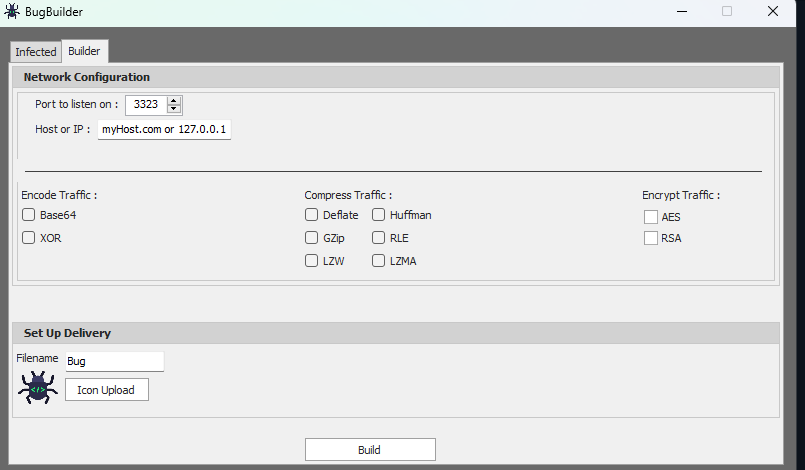
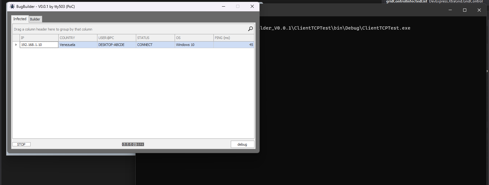

De la Shellcode Artesanal al C2 Builder: Anatomía de un Dropper y su Metamorfosis en Framework
Análisis de la creación de un dropper de shellcode en C puro y Assembly (WinExec/ExitProcess), el desarrollo de un stub criptográfico en NASM, y la evolución hacia un constructor de malware con panel C2, ofuscación y persistencia en C#.
01. Fase 1: El Arte de la Shellcode Artesanal (hace 3 años)
La filosofía del dropper manual
El punto de partida no fue un builder con interfaz gráfica, sino un dropper puro en C. El objetivo era claro: escribir una shellcode capaz de lanzar un ejecutable (calc.exe) y finalizar limpiamente el proceso llamando a WinExec y ExitProcess. No se trataba de evadir AV, sino de entender la anatomía de una shellcode: cómo se posiciona en memoria, cómo resuelve las direcciones de la API de Windows, y cómo se pasa el control al flujo de ejecución modificado.
El stub: De C a Assembly
Para generar los opcodes, primero escribimos la lógica en C estándar. Este archivo (stub_shellcode.c) sirve como molde conceptual para entender qué queremos que haga el código a bajo nivel.
A partir de este código, la tarea de ingeniería inversa consistió en traducir esto a Assembly NASM. Creamos stub_shellcode.asm, donde definimos manualmente la pila, pusheamos la cadena "calc.exe" en formato little-endian y configuramos los registros para la llamada a la API.
Para pasar "calc.exe" a la pila en x86, es necesario invertir el orden de los bytes. La shellcode no usa APIs de alto nivel para strings; todo son bytes crudos empujados a mano. Esto es fundamental para que la shellcode sea independiente de la posición y no dependa de secciones de datos.
02. Resolución Dinámica de la API (GetProcAddress)
Para que nuestra shellcode funcione en diferentes versiones de Windows (o con diferentes parches), no podemos hardcodear las direcciones de WinExec o ExitProcess. Aquí entra en juego la técnica de resolución dinámica en tiempo de ejecución.
Obtención de la dirección base de kernel32.dll
Utilizamos GetModuleHandle("kernel32.dll") para obtener la dirección base en memoria de la DLL. Kernel32 es la piedra angular de la API de Windows y siempre está cargada en el espacio de memoria de los procesos de usuario. A diferencia del PEB (Process Environment Block) walking en shellcode pura, aquí aprovechamos que el dropper es un ejecutable compilado y podemos usar la API de Windows antes de saltar al código malicioso.
La herejía del formateo en el arreglo
Una vez que tenemos las direcciones winexec_addr y exitprocess_addr, debemos parcharlas dentro de nuestro arreglo de shellcode. Aquí nos enfrentamos a un detalle técnico crucial: el procesador x86 es little-endian. Si la función GetProcAddress nos devuelve una dirección como 0xAF5477FF, debemos guardarla en el arreglo de shellcode como 0xFF, 0x77, 0x54, 0xAF.
Para ello, aplicamos máscaras de bits y desplazamientos para extraer cada byte de la dirección y colocarlo en la posición correcta del arreglo. Esta técnica es la que permite que el call ebx de nuestra shellcode aterrice en la dirección correcta de WinExec. Es un error común en principiantes olvidar este paso y terminar con una shellcode que salta a direcciones de memoria corruptas, provocando un crash inmediato.
03. El Arte del Despliegue: Punteros a Función
El archivo run.c contiene el mecanismo de lanzamiento. Declaramos un puntero a función (int(*func)()) y le asignamos la dirección de memoria de nuestro arreglo shellcode.
Al hacer el casting func = (int(*)())shellcode; y posteriormente llamar a func(), estamos obligando al procesador a saltar a nuestra región de datos y ejecutar esos bytes como si fueran código. Esto es la esencia de un dropper: no hay inyección en otro proceso, solo ejecución directa.
Sin embargo, esta técnica tiene una limitación importante: la región de memoria donde reside el arreglo debe tener permisos de ejecución. En sistemas modernos con DEP (Data Execution Prevention) habilitado, esto requeriría un paso previo con VirtualProtect para marcar la página de memoria como ejecutable. En su momento, la PoC se probó en un entorno controlado sin DEP para validar la lógica de la shellcode antes de añadir esa capa de evasión.
Esta técnica es un "dropper". No estamos secuestrando el registro EIP mediante un buffer overflow. Simplemente estamos cargando un arreglo de bytes ejecutables en memoria y redirigiendo el flujo de ejecución hacia él. Es una técnica más ruidosa pero más controlada. En un exploit real, la shellcode se inyecta en otro proceso o se ejecuta tras corromper la pila.
04. Ofuscación Avanzada: El Stub Criptográfico en NASM
Mientras el builder en C# resolvía el problema de la generación de payloads, surgió una cuestión más fundamental: ¿cómo proteger la shellcode en reposo? A finales de 2025, me planteé crear un stub descifrador en Assembly puro. La idea era simple: la shellcode real viaja cifrada (con un esquema de claves dinámicas), y un pequeño stub en NASM se encarga de descifrarla en tiempo de ejecución antes de saltar a ella. El objetivo era doble: evadir firmas estáticas y añadir una capa de ofuscación que complicara el análisis forense.
El payload de prueba (Linux x86)
Para esta prueba de concepto, utilicé un payload mínimo que ejecuta una syscall de salida en Linux (exit(10+22)). La shellcode en bruto es la siguiente:
La lógica de descifrado (Bloques XOR con mutación)
El stub en NASM utiliza un algoritmo de descifrado por bloques. En lugar de un simple XOR estático, implementé una mezcla de operaciones para cada bloque de 4 bytes: A ^ B + (C - 1) - (D + 1). Los datos cifrados se almacenan en la sección .data y el stub reserva un buffer en .bss.
La lógica es particularmente interesante porque no depende de constantes fijas globales; cada bloque tiene su propio conjunto de claves (A, B, C, D), lo que permite generar un stub personalizado para cada payload, dificultando la creación de firmas estáticas por parte de los AV. La elección de las operaciones (XOR, decremento, incremento, resta) no es arbitraria: se busca una mezcla de operaciones aritméticas y lógicas que no sea trivial de simplificar por un motor de análisis estático.
Este stub está escrito para la convención de syscalls de Linux x86 (int 0x80). La diferencia clave con el mundo Windows es el uso de interrupciones de software vs. llamadas a la API kernel32. Sin embargo, la técnica de descifrado XOR por bloques es completamente portable a Windows si se ajusta la shellcode objetivo y se reemplaza la syscall de salida por una llamada a ExitProcess.
05. Fase 2: BugBuilder — Automatización y C2 (hace 2 años)
La shellcode manual era poderosa pero impráctica para operaciones a gran escala. La evolución lógica fue BugBuilder, un proyecto en C# (.NET Framework) que traslada el concepto de dropper a un entorno de construcción visual con panel de control.
El motor de compilación interno: Roslyn y CodeDOM
Uno de los mayores desafíos técnicos fue generar un ejecutable sin tener un compilador externo instalado. La solución residió en incrustar el compilador de C# dentro del builder. Para ello, se evaluaron dos enfoques:
- CodeDOM (Code Document Object Model): Permite generar código fuente y compilarlo en tiempo de ejecución usando el proveedor CSharpCodeProvider. Es la opción más portable y la que se utilizó en la PoC inicial.
- Roslyn (Microsoft.CodeAnalysis.CSharp): El compilador moderno de C# como servicio, que ofrece un control más granular sobre la sintaxis y los árboles de expresión. Ideal para payloads más complejos que requieren características modernas del lenguaje.
El código fuente de la carga útil se mantenía como un recurso embebido en el ensamblado, y se reemplazaban marcadores de posición (placeholders) con las configuraciones del usuario (IP, puerto, métodos de ofuscación) antes de la compilación. Esto permitía generar un binario único para cada campaña sin necesidad de herramientas externas.
Arquitectura del proyecto
BugBuilder se divide en dos componentes principales:
- El Builder (Cliente): Una interfaz Windows Forms donde el operador configura el payload. Se selecciona el icono, el nombre del archivo, y se activan opciones de persistencia (registros, startup folder, copias). Se integran módulos de ofuscación y encoding de tráfico.
- El Servidor C2: Un listener TCP asíncrono que recibe conexiones de los clientes infectados. Los datos se transmiten en formato JSON, facilitando el parseo de la información del bot (IP, país, SO, usuario, ping).
El protocolo de comunicación TCP
A diferencia del dropper original que solo ejecutaba calc.exe, BugBuilder establece un canal de persistencia. El cliente malicioso se conecta al servidor, serializa un objeto ModelInfo a JSON y lo envía. La elección de JSON sobre formatos binarios fue pragmática: facilita la depuración, es legible por humanos durante el desarrollo, y es trivial de parsear en ambos extremos con Newtonsoft.Json.
El Panel de Control (C2)
El operador utiliza una ventana con pestañas:
- Builder: Configuración del payload. Incluye parámetros de red (Host/IP, Puerto) y técnicas de evasión como la compresión del tráfico o el cifrado (XOR, AES, RSA).
- Infected: Un grid en tiempo real que muestra los bots conectados, ordenados por IP, País, Usuario, Sistema Operativo y latencia (Ping).
La inclusión de opciones como LZMA, GZip, Huffman, o diferentes esquemas de cifrado demuestran una transición desde una PoC académica a una herramienta orientada a operaciones que enfrenta entornos defendidos por firewalls e IDS. La variabilidad del payload es clave para evadir firmas estáticas.
06. Bitácora de Desarrollo: De la Idea al GridView
La construcción del builder no fue un proceso lineal. Rescatando los registros de chat originales, se puede trazar la evolución del pensamiento técnico:
La semilla de la idea (Enero 2024)
El problema inicial era claro: generar un .exe sin un compilador externo. La solución consistió en incrustar todo lo necesario dentro del ensamblado del builder, utilizando el compilador de C# en memoria y manteniendo el código fuente de la carga útil como strings de recursos.
El siguiente paso fue diseñar la UI. La meta era una interfaz modular donde el usuario pudiera personalizar cada aspecto del binario de salida, desde el ícono hasta los métodos de ofuscación del tráfico. La arquitectura de compilación interna (CodeDOM) fue clave para esta etapa.
La conexión con el C2
Una vez generado el .exe, debía reportar a casa. La decisión técnica fue utilizar un formato de serialización ligero (JSON) sobre TCP. Se implementó un modelo de datos (ModelInfo) para mapear la información de la víctima (IP, país, hostname, SO, ping) y visualizarla en un GridView.
La necesidad de una flag para evaluar el pipeline de procesamiento demuestra una comprensión temprana de los protocolos de comunicación maliciosa avanzados. No es suficiente enviar datos; el binario y el servidor deben negociar si el tráfico está codificado, comprimido o cifrado, tal como se ve en la UI final con las opciones de Encode/Compress/Encrypt. Esta negociación es lo que permite que el C2 sea flexible y resistente a cambios en las defensas del target.
La trampa del "todo en strings"
En septiembre de 2024, reflexioné sobre la arquitectura del builder. La primera iteración almacenaba todo el código fuente del payload como strings literales en los recursos, con las herramientas de compilación incrustadas. Este enfoque, aunque funcional, era frágil: cualquier cambio en la lógica del payload requería modificar cadenas largas y propensas a errores de sintaxis. La lección fue que el builder debía ser más modular, con plantillas parametrizables en lugar de código fuente hardcodeado.
07. Galería de la UI: Anatomía de BugBuilder
Las siguientes imágenes documentan el estado final de la PoC. Representan la materialización de los conceptos discutidos en la bitácora: un generador de payloads con su propio panel de comando y control.
Interfaz de Construcción (Builder)

Panel de Control Vacío (Infected)

Conexión Exitosa (C2 Activo)

08. Conclusión: Del Byte al Framework
La progresión de winshellcode- a BugBuilder representa un arco de aprendizaje fundamental en el desarrollo de software de seguridad ofensiva. Se pasó de entender la microarquitectura de una pila de llamadas a abstraer esa lógica en una fábrica de binarios.
Tabla comparativa de la evolución
| Característica | winshellcode- (Fase 1) | Stub Cripto (Fase 2) | BugBuilder (Fase 3) |
|---|---|---|---|
| Lenguaje | C + Assembly (NASM) | Assembly (NASM) | C# (.NET Framework) |
| Payload | Shellcode fija (calc.exe) | Shellcode variable descifrada | Payload configurable con persistencia |
| Ofuscación | Opcodes en bruto | XOR multibloque con llaves | Compresión, Cifrado (AES/RSA), Iconos camuflaje |
| Comunicación | Ninguna (Ejecuta y termina) | Ninguna | C2 TCP bidireccional con JSON |
| Resolución API | Manual (GetProcAddress + parcheo little-endian) | Syscalls directas (int 0x80) | Automática (.NET P/Invoke o Referencias) |
| Generación de binario | Compilación externa (GCC) | Ensamblador externo (NASM) | Compilación interna (CodeDOM / Roslyn) |
El primer proyecto nos enseñó el valor de la precisión manual: saber exactamente qué bytes ocupa una instrucción y cómo la pila afecta al flujo. El segundo proyecto añadió la capa de protección de la carga útil, entendiendo que la shellcode en reposo es la parte más vulnerable del ciclo de vida de un payload. Finalmente, BugBuilder operacionalizó ese conocimiento, convirtiendo un arte técnico en una herramienta modular lista para entornos hostiles, donde la capacidad de regenerar binarios con firmas diferentes es la diferencia entre el éxito y la detección.